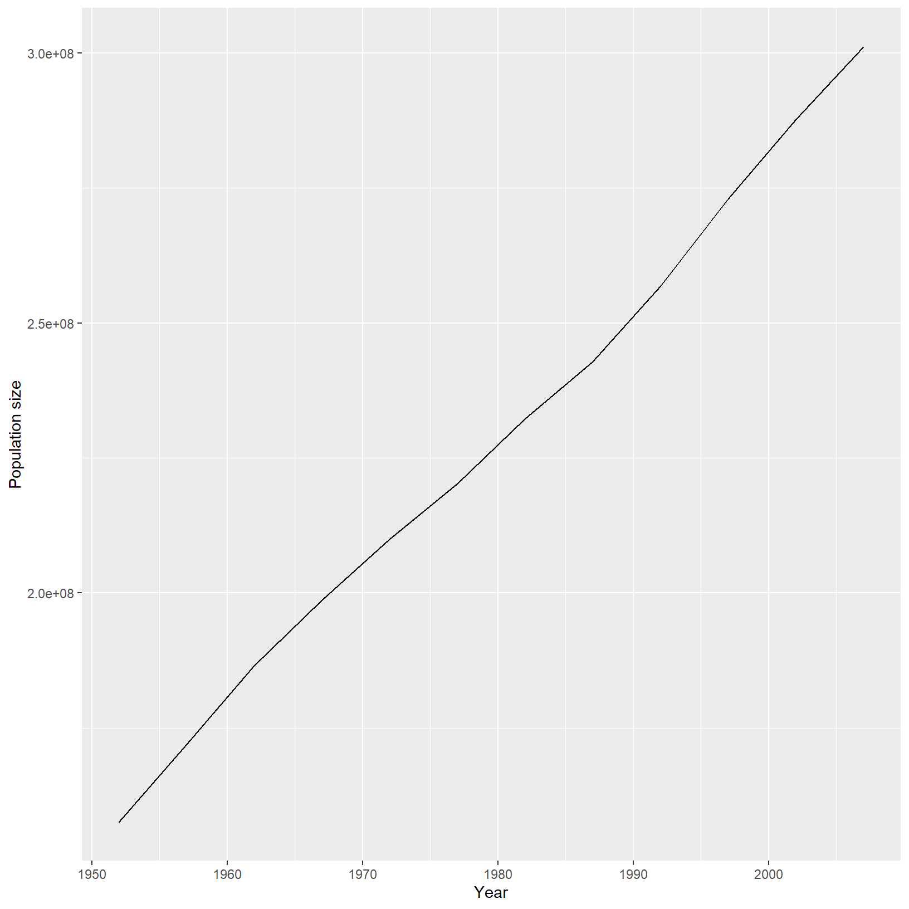

Brief description of the contents of this lesson including objectives:
Describe a problem that learners will be able to solve by the end of this lesson.
Describe any data sets or packages that learners need to download or install before proceeding.
# Read in a data file from the data folder included with the student workbook
dat <- read.csv("data/gapminder_data.csv")Make a code block that loads any packages needed for the analysis. It can be helpful to indicate which functions come from which packages.
# Load dplyr: filter
library(dplyr)
# Load ggplot2: ggplot
library(ggplot2)# This is an R code block that will execute any code inside and show the results.
dat %>%
filter(country == "United States") country year pop continent lifeExp gdpPercap
1 United States 1952 157553000 Americas 68.440 13990.48
2 United States 1957 171984000 Americas 69.490 14847.13
3 United States 1962 186538000 Americas 70.210 16173.15
4 United States 1967 198712000 Americas 70.760 19530.37
5 United States 1972 209896000 Americas 71.340 21806.04
6 United States 1977 220239000 Americas 73.380 24072.63
7 United States 1982 232187835 Americas 74.650 25009.56
8 United States 1987 242803533 Americas 75.020 29884.35
9 United States 1992 256894189 Americas 76.090 32003.93
10 United States 1997 272911760 Americas 76.810 35767.43
11 United States 2002 287675526 Americas 77.310 39097.10
12 United States 2007 301139947 Americas 78.242 42951.65
Figure 1. Population growth in the United States 1952 - 2007.
TRY THIS: What will this code do?
1 + 1Answer
## Answer to be evaluated goes here. 1 + 1[1] 2
Number all exercises using the module number. Include starter code in the /exercises folder if appropriate.
0.1 Exercise 1 for module 0.
0.2 Exercise 2 for module 0.
Introduction to Computing in R with NEON